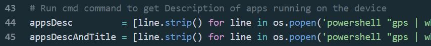

BOSCO Uganda is a non-profit NGO operating out of Northern Uganda that strives to bring power and computer technologies to the rural areas. Their mission is to "To provide innovative information and Communication Techology (ICT) solutions using a collaborative and web-based approach to foster socio-economic development and peace building in rural communities in Northern Uganda". I had the privilege to work with them this past summer and this project is a result of that work.
Project Overview
BOSCO Uganda has partnered with UNICEF to deploy digital doorways in refugee camps and schools throughout rural areas in northern Uganda. The digital doorway consists of three distinct laptop computers that are powered by a solar charged battery system. All of this is contained within a kiosk station which allows three users to work at any time.
In order to improve these systems, BOSCO Uganda needs to collect information about the users’ demographics and application use to ensure that the digital doorways are being utilized by each demographic for educational purposes. Since the system contains only one user account that everyone logs in and uses, it is difficult to know who is using the system, how often they are using the system, and what applications they are using. The team, led by Jacob Huber, has created a simple Windows desktop application that will appear immediately as a user logs into the machine and every thirty minutes following to reach every user. The application will require the user to login or create an account, depending on if they are a first-time user. Basic information about demographics will be collected, stored within a database, and accessible to BOSCO Uganda. In addition to the demographics collection, the team has developed python scripts that will run intermittently as background processes to collect the names of applications the user is running. The applications which will be recorded are those open in the main taskbar at the bottom of the screen, such as Google Chrome or Microsoft Word. The application and background monitoring require minimal user interaction ensuring project success regardless of the user’s prior technological knowledge.
The installation of these systems has already begun with the first two deployments being at Pagirinya Secondary School – a school created specifically to serve the South Sudanese refugee community and other residents of the surrounding Pagirinya area – and St. Mary’s Assumpta Secondary School. In a few months, BOSCO Uganda will be able to collect and analyze this information in order to find trends regarding how the computers are used in order to improve resources available to refugees and students.

BOSCO Data Monitoring Interface for Computer Users Project Team:
(Pictured from left to right: Odong James, Watmon Patrick, Okello Christoper, Apiyo Eunice, ICT Teacher at Pagirinya, Lakot Barbara, Jacob Huber, Lanyero Gertrude, Olweny Simon. Not pictured: Annalise Wagner )
Team Working on Project at a Digital Doorway
Video Intro
Video Demo
Windows From Application
Interface of the Application
Key Features
- Information auto fills if the name is already in database.
- Submit is only permitted after the required fields are filled.
- App takes entire screen with no close button ensuring the user submits.
Background Monitor Python Scripts
I developed two python scripts that run intermittently as background processes to collect the names of applications the user is running. The applications which will be recorded are those open in the main taskbar at the bottom of the screen, such as Google Chrome or Microsoft Word. The application and background monitoring require minimal user interaction ensuring project success regardless of the user’s prior technological knowledge.
The first script is broken down into 3 different categories
- Connect to SQL Server and acquire contents
- Run powershell commands to find apps running
The powershell script produces the following information when run: - Lastly, add application to database if it is not already there.
- The main change in code is the addition of a section to get the name in order to link it.
The second python script works very similarly. It connects to the database, extracts the name of the current user, and then links the name to the applications being used. This is very helpful because it allows BOSCO to be able to find data on a specific demographic or age range.
- 
Instruction Manual
Along the process I collected resources and information on the materials that are needed to install and run the entire project successfully. One major componenet of the project is that it has and will continue to be deployed at computer centers that do not have access to the internet. As a result, all of the things that are needed to run the project, such as python libraries for SQL Databases, need to be downloaded online and made available to take offline. The instruction manual that I created centers around a folder that I designed to contain everything that the user needs in order to install the system.